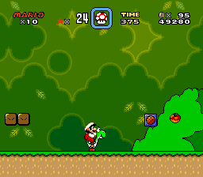
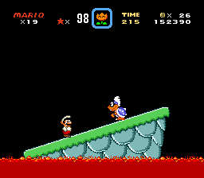
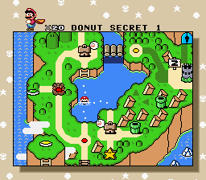
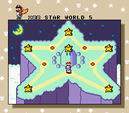

Super Mario World é um jogo produzido e lançado pela Nintendo em 1990 no Japão e em 1991 na América do Norte para o Super Nintendo Entertainment System (também chamado de SNES).
É considerado um dos melhores jogos de plataformas já feitos, e por esse motivo decidi fazer essa página para introduzir o jogo.
O jogo é relativamente grande em comparação com os jogos da época, possuindo muitas fases que levam um tempo médio de 2 minutos para serem completadas. O jogo introduziu a mecânica de 'spin jump', permitindo que o jogador pule em alguns inimigos em que não seria possível normalmente. Também há um novo powerup - a pena de capa, que faz com que o jogador possa sobrevoar as fases com um vôo difícil de controlar. Além disso, o jogo também introduziu o Yoshi, que ajuda o jogador em algumas das fases e é considerado um dos personagens mais carismáticos de toda a franquia.
O jogo não é muito difícil. As fases não ficam muito absurdas enquanto mantém uma curva de dificuldade. Por outro lado, os chefes são extremamente fáceis.
As fases recompensam aqueles que exploram: além dos canos que levam a áreas secretas, o jogo também adiciona saídas secretas que levam a caminhos alternativos e fases extras no mapa. As fases que possuem uma saída secreta são vermelhas no mapa.
 Obrigado por ler!
Feito por Vitor Ramires Rocha
Turma 2C